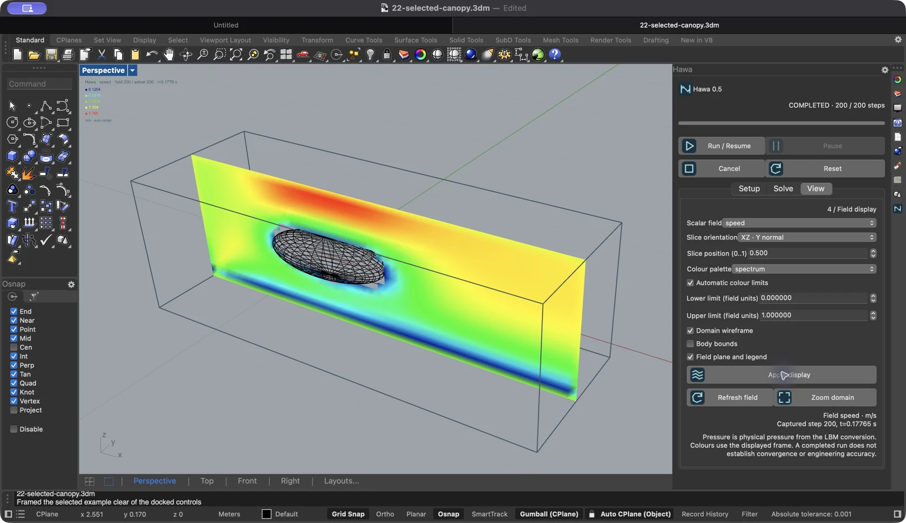
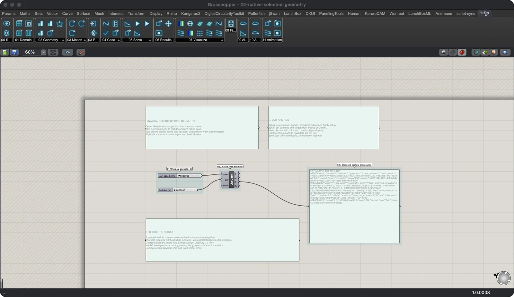
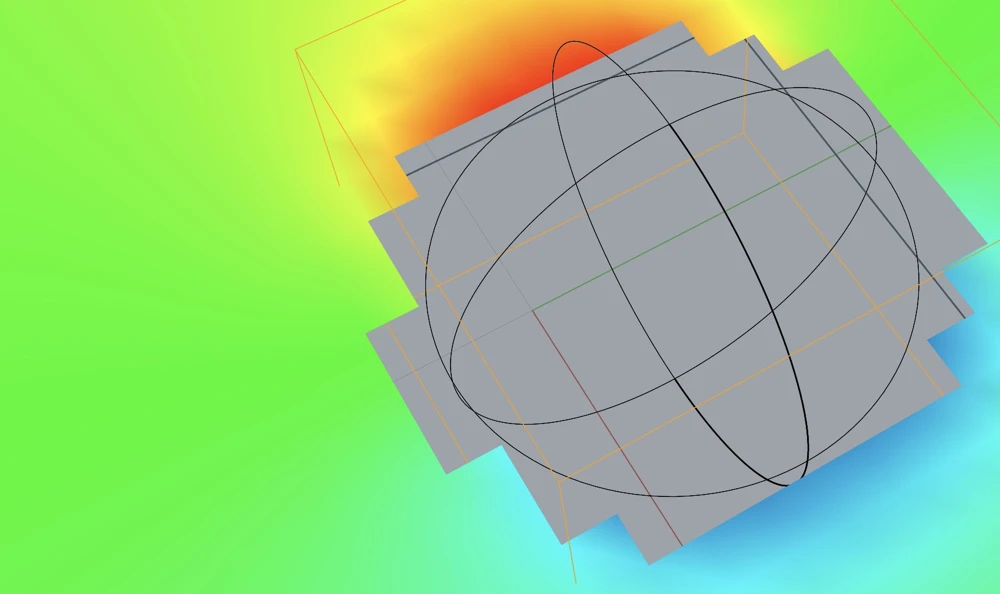
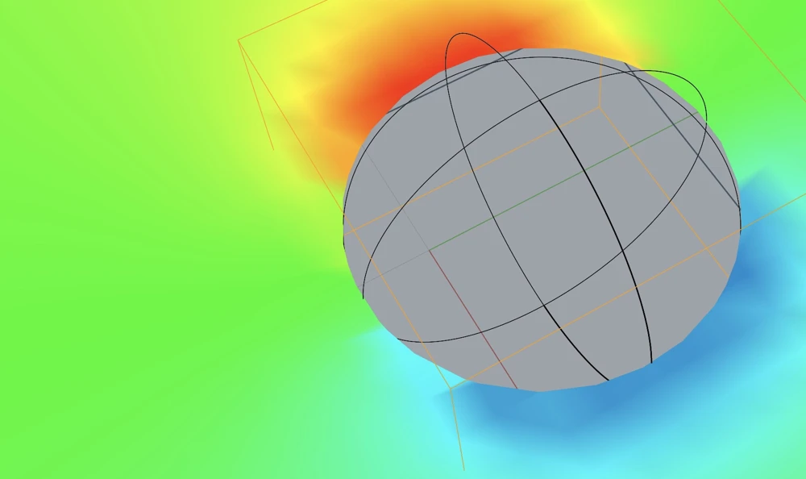

Linked block
Open the panel and the unbound GH template. Change direct sliders in either interface. Inspect the same case.
21-native-live-sync.ghHawa 0.5 adds a dockable Rhino panel, selected-body setup and live Grasshopper sync. Curved stationary walls gain better surface preparation and clipped slice displays. Cleanup keeps ownership when a close request fails.
Watch the walkthrough ↓Development build. Publication and video hosting will be chosen after review. Existing release downloads remain unchanged.
Captioned walkthrough. No audio. Uses verified Rhino captures and labelled excerpts from the earlier motion and wake recordings. Playback speed is presentation time, not solver speed.
Select closed meshes or solid Breps. Fit the domain, then edit its origin, size, fluid properties and face boundaries. The Setup, Solve and View tabs keep these controls in one dockable panel.

Set cell size, target steps and backend. Run, pause, cancel and reset remain visible above the tabs. Progress and the captured field step are reported separately.
Choose speed or pressure, slice axis and position, colour palette and range. Toggle the domain, body and field. Display edits reuse a healthy session.
Native setup currently supports stationary, single-fluid, axis-aligned +X flow. The panel runs without Grasshopper. Broader motion, search, recording and visualization workflows remain in GH.
Hawa Linked Case connects GH to the shared case. Direct sliders sync in both directions. Computed GH inputs remain read-only in the panel. One component owns the binding.
Physical edits stop the prior run and invalidate its field. Changes to a referenced body do the same. Stale output is labelled in Rhino and withheld from GH mesh outputs.
Save the model and its bound definition together. Reopening restores settings and stays idle. Live worker state is not stored in the file.

Surface preparation now uses cell size and body scale to set Brep tessellation. With interpolated stationary walls enabled, the solver uses fractional distances where lattice links meet the surface.


Boundary vertices use reconstructed display colours. Stationary wall speed is zero; pressure and density colours use the adjacent fluid sample. Raw probes and validity flags stay unchanged. The outline is piecewise linear at lattice resolution.
Native slices, Linked Case meshes and Hawa Slice support this clipping. Arbitrary Plane Field sampling, isosurfaces and Grid Preview retain their existing masking rules. The lattice remains uniform.
The current bundle has 21 supported Grasshopper definitions and the native-only curved-solid example. The numbered files cover the workflows below. Legacy example 09 is excluded from the bundle.
Open the panel and the unbound GH template. Change direct sliders in either interface. Inspect the same case.
21-native-live-sync.ghOpen the Rhino model first. Select the body, review the domain and connect the optional GH controls.
22-selected-canopy.3dm22-native-selected-geometry.ghOpen the sphere model. Run the 100-step demonstration with interpolated stationary walls. Compare cell sizes at equal physical time.
23-curved-solid.3dmThese workflows remain available in 0.5. The hull is an example assembly built from ordinary geometry tools.
| Files | Workflow | What to change |
|---|---|---|
| 01–08 | Vortices, cavity, channel and block flow | Collision model, grid, run target and field |
| 10 | Responsive parametric hull search | Shape sliders, candidate count and pause/cancel |
| 11–12 | 3D visualization and local airfoil / RC-wing data | Seeds, fields, palettes, coordinates and polar files |
| 13–16 | Recording, curved sphere, fixed refinement and cylinder wake | Recorded frame, stationary wall mode and patch resolution |
| 17–20 | Oscillating cylinder, pitching foil, rotating paddle and cycle search | Prescribed motion and complete-cycle evaluation |
Older GH components could discard their job handles after a failed close request. Solve, Evaluate, Record, Refined Solve, Motion Evaluate and the query base now transfer detached IDs to the shared cleanup service.
The retry service works without the native panel. Duplicate requests are idempotent; reentrant callbacks cannot start nested cleanup calls. This queue lasts for the current Rhino process.
The cleanup follow-up ran in Rhino 8.36 on macOS arm64, using embedded Python 3.9 and PyTorch 2.8.0. CPU and MPS were exercised. There were 29 skipped Python tests and four existing MRT warnings.
Live checks covered failed closes, document disposal, hull and motion searches, invalid inputs, full recording/refinement examples, 13 shared-state checks, three binding-callback checks and 11 gallery workflows. The full preceding review covered all 22 supported workflows.
Read the cleanup verification JSON · Read the curved-wall verification JSON · Read the preceding full verification JSON